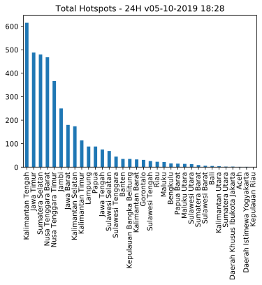

Last updated: 05-10-2019 18:28
Data VIIRS (NASA FIRMS)
Titik Api @Indonesia
3887 (24H) | 5191 (48H) | 14545 (7D)
Olah Data dan Visualisasi Sebaran Titik Api di Indonesia.
Acq. Date: 04-10-2019 11:30 -- 05-10-2019 13:00 WIB (24H) | 03-10-2019 11:48 -- 05-10-2019 13:00 WIB (48H) | 28-09-2019 11:42 -- 05-10-2019 13:00 WIB (7D)
Home Top 3 GitHub Sumatera Kalimantan Sulawesi Maluku & Papua Jawa Bali & NT

Data 24H
| Kategori | #Titik |
|---|---|
| Confidence High | 221 |
| Confidence Nominal | 3117 |
| Confidence Low | 549 |
| Total | 3887 |
| Confidence High or FRP>10 | 1034 |
Data 48H
| Kategori | #Titik |
|---|---|
| Confidence High | 320 |
| Confidence Nominal | 4243 |
| Confidence Low | 628 |
| Total | 5191 |
| Confidence High or FRP>10 | 1330 |
Data 24H
| # | Provinsi | Total | H | N | L | HFRP10 |
|---|---|---|---|---|---|---|
| 1 | Kalimantan Tengah | 615 | 13 | 520 | 82 | 175 |
| 2 | Jawa Timur | 488 | 10 | 391 | 87 | 80 |
| 3 | Sumatera Selatan | 480 | 23 | 302 | 155 | 176 |
| 4 | Nusa Tenggara Barat | 468 | 86 | 346 | 36 | 157 |
| 5 | Nusa Tenggara Timur | 367 | 40 | 301 | 26 | 80 |
| 6 | Jambi | 250 | 19 | 224 | 7 | 99 |
| 7 | Jawa Barat | 180 | 2 | 125 | 53 | 40 |
| 8 | Kalimantan Selatan | 174 | 1 | 165 | 8 | 22 |
| 9 | Kalimantan Timur | 114 | 1 | 101 | 12 | 42 |
| 10 | Lampung | 88 | 0 | 77 | 11 | 28 |
Data 48H
| # | Provinsi | Total | H | N | L | HFRP10 |
|---|---|---|---|---|---|---|
| 1 | Nusa Tenggara Barat | 821 | 153 | 619 | 49 | 305 |
| 2 | Kalimantan Tengah | 740 | 13 | 645 | 82 | 175 |
| 3 | Nusa Tenggara Timur | 583 | 56 | 472 | 55 | 119 |
| 4 | Jawa Timur | 544 | 11 | 445 | 88 | 85 |
| 5 | Sumatera Selatan | 521 | 23 | 343 | 155 | 179 |
| 6 | Jambi | 298 | 19 | 272 | 7 | 100 |
| 7 | Kalimantan Selatan | 238 | 2 | 227 | 9 | 26 |
| 8 | Jawa Barat | 200 | 2 | 144 | 54 | 42 |
| 9 | Lampung | 130 | 0 | 116 | 14 | 30 |
| 10 | Kalimantan Timur | 129 | 1 | 116 | 12 | 42 |
Data 24H

Data 48H